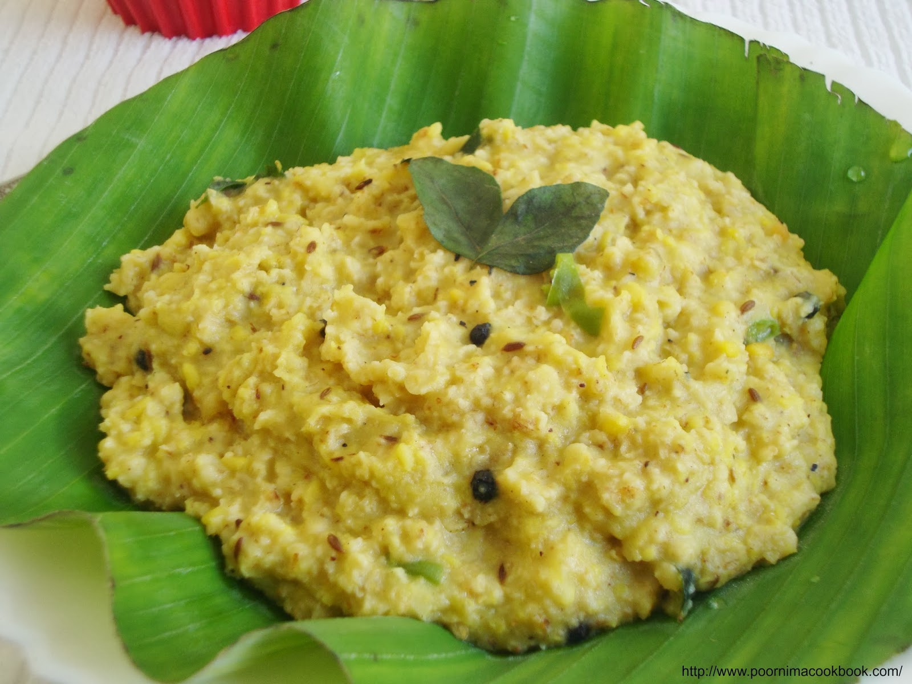

Try this simple vegan Ven Pongal made with ingredients like rice and lentils that are easily avaiable.
This popular South Indian dish is delicious and easy to put together and typically served as breakfast in many parts of South India.

Preparation Time : 10 mintues
Preparation Time : 25 mintues
Preparation Time : 35 mintues
Author : BANU
HOW TO PREP FOR VEN PONGAL: TIPS AND TRICKS :
The preparation time is not a lot. Hardly 15-30 minutes is required to prep the rice and the lentils.
Start by toasting the lentils or split/peeled mung beans in a dry pan.
Roasting allows the moong beans to get aromatic and there is no foam formed when the water is added.
Another tip is to avoid using sticky rice as the Pongal will turn mushier than required
Calories: 280kcal
Carbohydrates: 35.7g
Protein: 8.7g
Iron: 2mg
Course: breakfast
Cusine: south Indian
Servings: 2 people
Calories: 280kcal
Images for the instruction to Preparing the Rice and Lentils